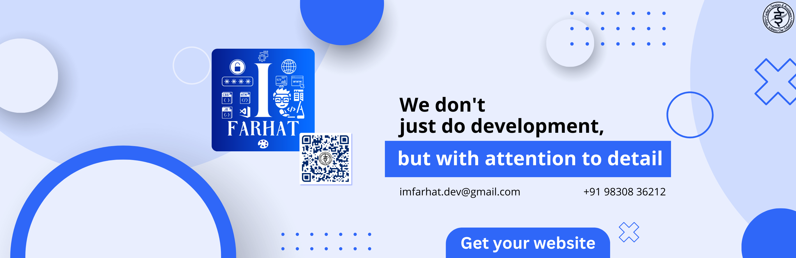

Home
About
TIS Society
Affiliation
Vision & Mission
Self Affidavit Fromat
Team
Board
Faculty
Administrative
Message From Headmistress
Infrastructure
Sports
Campus
Classroom
Laboratories
Other
Curriculum
Pre Primary
Primary & Middle School
Senior School
Booklists
Extra Curricular
E Magazine
Indoor Clubs
Outdoor Clubs
School Magazine
News & Events
News & Media
Excursion
Events
Video Gallery
Teachers Training
Notices
Circulars
Admission
Information
Criteria
Transport
Fee Structure
School Timing
School Uniform
TC
Subject Combination (XI)

Home
/
Events
Events
news-events